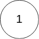

142. 环形链表 II
题目描述
给定一个链表，返回链表开始入环的第一个节点。 如果链表无环，则返回 null。
为了表示给定链表中的环，我们使用整数 pos 来表示链表尾连接到链表中的位置（索引从 0 开始）。 如果 pos 是 -1，则在该链表中没有环。注意，pos 仅仅是用于标识环的情况，并不会作为参数传递到函数中。
说明：不允许修改给定的链表。
进阶：
- 你是否可以使用
O(1)空间解决此题？
示例 1：

1 | |
示例 2：


1 | |
示例 3：

1 | |
提示：
- 链表中节点的数目范围在范围
[0, 104]内 -105 <= Node.val <= 105pos的值为-1或者链表中的一个有效索引
解题思路
使用快慢指针，快指针每次走2步，慢指针每次走1步。
1. 如果有环必定会相遇。
证明：
- 设快指针速度$v{fast}=2$，慢指针速度$v{slow}=1$，行走时间为$t$，两者的距离差为$d$，环的周长为$L$，环之前的路径长度为$S$。
- 易见$d=(v{fast}-v{slow})*t=t$，因为$t$的值是连续递增整数，若有环，则必定存在某一时刻$t=L$，即必定相遇。
2. 相遇时刻慢指针的位置相对于入口走了$L-S$
证明：
- 慢指针在走$S$到达环入口时，由于快指针速度是慢指针的两倍，因此快指针此时已在环中走了$S$。此时两者都在环中，开始进行追逐，设当前时刻$t=0$。
- 因为都在环中，快指针追慢指针，可以认为快指针落后慢指针$L-S$，因此相遇时需要满足$(v{fast}-v{slow})*t=L-S$，即$t=L-S$时相遇，又因为慢指针速度为$1$，因此相遇时慢指针相对于环入口走了$L-S$。
3. 相遇后慢指针再走$S$即到达环入口
- 可以再使用指针
t从head开始行进，t和慢指针同步走$S$，两者相遇，相遇位置为环入口。
C++代码
1 | |
本博客所有文章除特别声明外，均采用 CC BY-SA 4.0 协议 ，转载请注明出处！